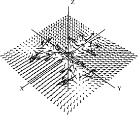
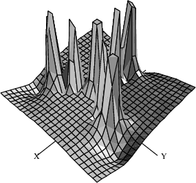

This setting is needed to get Newton's iterations to converge.
)set streams calculate 10
We resume our continuing saga of arrows and complex functions. Suppose we want to investigate the behavior of Newton's iteration function Newton iteration in the complex plane. Given a function
f, we want to find the complex values
z such that
f(z)=0.
The first step is to produce a Newton iteration formula for a given
f:
xn+1=xn-f(xn)f'(xn). We represent this formula by a function
g that performs the computation on the right-hand side, that is,
xn+1=g(xn).
The type Expression Integer (abbreviated EXPR INT) is used to represent general symbolic expressions in FriCAS. Expression To make our facility as general as possible, we assume
f has this type. Given
f, we want to produce a Newton iteration function
g which, given a complex point
xn, delivers the next Newton iteration point
xn+1.
This time we write an input file called newton.input. We need to import MakeUnaryCompiledFunction (discussed in the last section), call it with appropriate types, and then define the function
newtonStep which references it. Here is the function
newtonStep:
C := Complex DoubleFloat The complex numbers
complexFunPack:=MakeUnaryCompiledFunction(EXPR INT,C,C)
Package for making functions
newtonStep(f) == Newton's iteration function
fun := complexNumericFunction f Function for $f$
deriv := complexDerivativeFunction(f,1) Function for $f'$
(x:C):C +-> Return the iterator function
x - fun(x)/deriv(x)
complexNumericFunction f == Turn an expression $f$ into a
v := theVariableIn f function
compiledFunction(f, v)$complexFunPack
complexDerivativeFunction(f,n) == Create an nth derivative
v := theVariableIn f function
df := D(f,v,n)
compiledFunction(df, v)$complexFunPack
theVariableIn f == Returns the variable in $f$
vl := variables f The list of variables
nv := # vl The number of variables
nv > 1 => error "Expression is not univariate."
nv = 0 => 'x Return a dummy variable
first vl
Do you see what is going on here? A formula
f is passed into the function newtonStep. First, the function turns
f into a compiled program mapping complex numbers into complex numbers. Next, it does the same thing for the derivative of
f. Finally, it returns a function which computes a single step of Newton's iteration.
The function complexNumericFunction extracts the variable from the expression
f and then turns
f into a function which maps complex numbers into complex numbers. The function complexDerivativeFunction does the same thing for the derivative of
f. The function theVariableIn extracts the variable from the expression
f, calling the function error if
f has more than one variable. It returns the dummy variable
x if
f has no variables.
Let's now apply newtonStep to the formula for computing cube roots of two.
Read the input file with the definitions.
The cube root of two.
Get Newton's iteration formula.
Let
a denote the result of applying Newton's iteration once to the complex number
1+%i.
Now apply it repeatedly. How fast does it converge?
[(a := g(a)) for i in 1..]
Check the accuracy of the last iterate.
In MappingPackage1, we show how functions can be manipulated as objects in FriCAS. A useful operation to consider here is
*, which means composition. For example
g*g causes the Newton iteration formula to be applied twice. Correspondingly,
g**n means to apply the iteration formula
n times.
Apply
g twice to the point
1+%i.
Apply
g 11 times.
Look now at the vector field and surface generated after two steps of Newton's formula for the cube root of two. The poles in these pictures represent bad starting values, and the flat areas are the regions of convergence to the three roots.
The vector field.
drawComplexVectorField(g^3,-3..3,-3..3)

The surface.
drawComplex(g^3,-3..3,-3..3)
